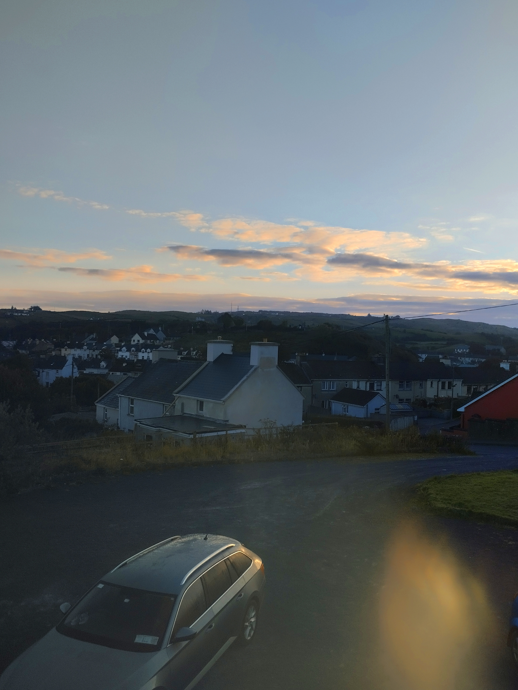

| El inicio del viaje |
A la hora de quedada en el aeropuerto llegué de los primeros del grupo de
personas con las que viajaba, en ese momento estaba todavía pensando en
que no me daba tiempo a darme cuenta de que era real de que el día
había llegado después de tanta espera aunque no tenía emociones
negativas sí que ganaban las positivas pero no se describir la
sensación es una mezcla de alegría pero a la vez una pequeña sensación
de tristeza porque iba a estar tanto tiempo lejos de las personas que
quería, seguridad pero a la vez inseguridad calma pero a la vez
nervios, era una mezcla de todo y a veces es difícil de procesarlo, por
lo que yo recomiendo es mantener la calma e intentar disfrutar de lo
que vives en el presente.
El vuelo había salido bien aunque tuvo un retraso de casi 1h y 30min
no me molestó esperar, así que hablé con las personas con las que iba a
viajar, dio la casualidad de que conocí a dos chicos menores que yo que
viajaban a la misma zona a la que iba a ir yo, yo pensaba que era el
único ya que era un pequeño pueblo cerca de la costa.
